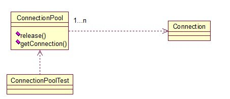

享元模式
享元模式的主要目的是实现对象的共享，即共享池，当系统中对象多的时候可以减少内存的开销，通常与工厂模式一起使用
UML

Java
对于数据库连接池，url、driverClassName、username、password及dbname，这些属性对于每个连接来说都是一样的，所以就适合用享元模式来处理，建一个工厂类，将上述类似属性作为内部数据，其它的作为外部数据，在方法调用时，当做参数传进来，这样就节省了空间，减少了实例的数量：
public class ConnectionPool { private Vector<Connection> pool; /*公有属性*/ private String url = "jdbc:mysql://localhost:3306/test"; private String username = "root"; private String password = "root"; private String driverClassName = "com.mysql.jdbc.Driver"; private int poolSize = 100; private static ConnectionPool instance = null; Connection conn = null; /*构造方法，做一些初始化工作*/ private ConnectionPool() { pool = new Vector<Connection>(poolSize); for (int i = 0; i < poolSize; i++) { try { Class.forName(driverClassName); conn = DriverManager.getConnection(url, username, password); pool.add(conn); } catch (ClassNotFoundException e) { e.printStackTrace(); } catch (SQLException e) { e.printStackTrace(); } } } /* 返回连接到连接池 */ public synchronized void release() { pool.add(conn); } /* 返回连接池中的一个数据库连接 */ public synchronized Connection getConnection() { if (pool.size() > 0) { Connection conn = pool.get(0); pool.remove(conn); return conn; } else { return null; } } }
Scheme
lazy evalatuion：使用delay来保存计算结果的表达式(promise)，而使用force来返回对应的计算结果，这样可以不但能计算无穷的结果，还能有效避免内存中大量的无效计算结果
- 定义各种lazy操作：car, cdr, cons, map, filter, ref, head
;; car for lazy evaluation (define lazy-car car) ;; cdr for lazy evaluation (define (lazy-cdr ls) (force (cdr ls))) ;; lazy cons (define-syntax lazy-cons (syntax-rules () ((_ a b) (cons a (delay b))))) ;; lazy map (define (lazy-map fn . lss) (if (memq '() lss) '() (lazy-cons (apply fn (map lazy-car lss)) (apply lazy-map fn (map lazy-cdr lss))))) ;; lazy filter (define (lazy-filter pred ls) (if (null? ls) '() (let ((obj (lazy-car ls))) (if (pred obj) (lazy-cons obj (lazy-filter pred (lazy-cdr ls))) (lazy-filter pred (lazy-cdr ls)))))) ;; returns n-th item of the lazy list (define (lazy-ref ls n) (if (= n 0) (lazy-car ls) (lazy-ref (lazy-cdr ls) (- n 1)))) ;; returns first n items of the ls (define (head ls n) (if (= n 0) '() (cons (lazy-car ls) (head (lazy-cdr ls) (- n 1)))))
- 定义两个无穷数列：
;;;; sequences ;;; infinite sequences represented by a_(n+1) = f(a_n) (define (inf-seq a0 f) (lazy-cons a0 (inf-seq (f a0) f))) ;;; 等差数列 (define (ari a0 d) (inf-seq a0 (lambda (x) (+ x d)))) ;;; 等比数列 (define (geo a0 r) (inf-seq a0 (lambda (x) (* x r))))
- 测试：
(define g1 (geo 1 2)) ;;Value: g1 (define g2 (geo 1 (/ 1 2))) ;;Value: g2 (head g1 10) ;;Value 12: (1 2 4 8 16 32 64 128 256 512) (head g2 10) ;;Value 13: (1 1/2 1/4 1/8 1/16 1/32 1/64 1/128 1/256 1/512) (head (lazy-map * g1 g2) 10) ;;Value 14: (1 1 1 1 1 1 1 1 1 1) (define ar1 (ari 1 1)) ;;Value: ar1 (head ar1 10) ;;Value 15: (1 2 3 4 5 6 7 8 9 10) (head (lazy-filter even? ar1) 10) ;;Value 16: (2 4 6 8 10 12 14 16 18 20)